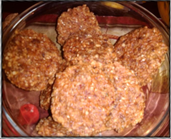

Ingredients
Steps
- 1 Cup sprouted kamut gain
- 2 Cups brazil nuts
- 2 Cups dates
- 1 Tablespoon grounded cloves
- 2 Tablespoon sea moss gal Optional
- 1 Cup mulberries
- 2 Burro bananas
- 3 Tablespoons of toasted sesame
- Optional may use coconuts oil or evenly mix Add after processing
- 3 Tablespoons agave
- 2 Tablespoons hemp Optional add after processing
Directions
- Blend dates nuts for 1 minute in processor, then ass sea moss gel and bananas with oil ground cloves blend another minute, then add spelt flour blend very well no more than 2 minutes.
- Then add hemp seeds and stir.
- Spoon into hand and place in a parchment or wax paper covered cookie sheet may need to place in freezer for 10-20 minutes in freezer.
- Place in food dehydrator for 20 hours or bake for minutes on 300 degree oven.
- Make al least 20 cookies.